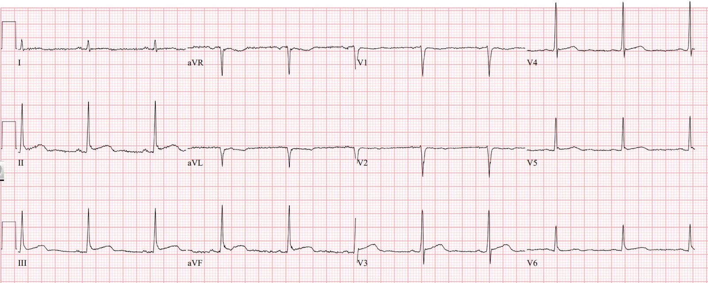
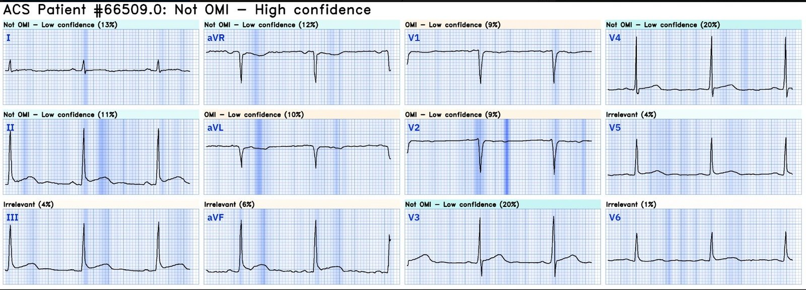
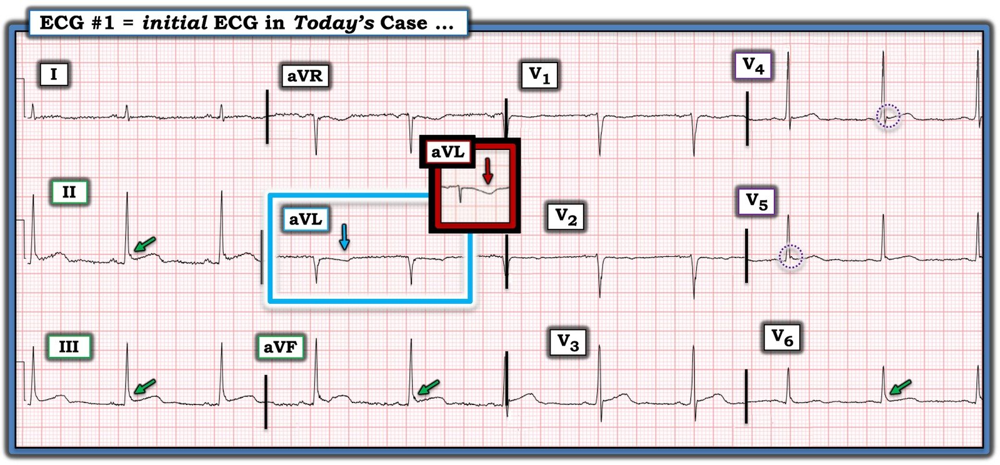

03/10/2024 — Một người ngoài 30 tuổi bị đau ngực cấp
Bản dịch tiếng Việt của bài "A 30-something with acute chest pain" – Dr. Smith’s ECG Blog. Giữ nguyên toàn bộ 4 hình ảnh của bản gốc.
Ca này được Sam Ghali (@EM_Resus) gửi cho tôi mà không kèm thông tin nào khác. Tôi giả định đó là một bệnh nhân đau ngực cấp.
“Anh nghĩ sao, Steve? Thật hay chỉ là giả?”


CÁC BẠN nghĩ sao?
Bản ghi có ST chênh lên ở các chuyển đạo dưới kèm một ít ST chênh xuống soi gương (reciprocal) và sóng T đảo ngược ở aVL. Hình ảnh này thường gợi ý nhồi máu cơ tim do tắc (OMI) thành dưới.
Câu trả lời của tôi: “Giả: khá chắc chắn, nhưng không chắc chắn 100%.”
Sam: “sao anh lại nói là giả?”
Smith: “Cảm nhận tổng thể (gestalt), nhưng nếu buộc phải giải thích: sóng J hình thành rõ và sóng R điện thế cao.”
Sam: “Ừ, tôi cũng nghĩ QRS âm ở aVL làm giảm giá trị của những thay đổi có thể bị diễn giải là “soi gương””
Smith: “phòng thông tim (cath lab) có được kích hoạt không?”
Sam: “Có, ca này được gửi cho tôi. Đó là một người đàn ông ngoài 30 tuổi bị đau ngực. Động mạch vành sạch. Troponin đều âm tính — bệnh nhân được loại trừ nhồi máu cơ tim cấp.”
Cuối cùng, Sam: “Thật lòng mà nói, ngoài việc đọc điện tâm đồ thành thạo, tôi nghĩ siêu âm tim tại giường có tay nghề có thể ngăn được rất nhiều lần kích hoạt kiểu này.”
Tôi đồng ý, tuy nhiên:
1) Tôi không nghĩ có thể có được hình ảnh siêu âm tim đủ tốt nếu không dùng chất cản âm dạng bọt khí.
2) Bạn cần thành thạo siêu âm tim ngang với mức tôi thành thạo điện tâm đồ.
3) Siêu âm tim là thêm một bước tốn thời gian. Thời gian là cơ tim.
Vậy hướng xử trí tốt nhất là:
Dùng AI Queen of Hearts của PMCardio trong đọc điện tâm đồ.


Không phải OMI, với độ tin cậy cao
Bấm vào đây để đăng ký quyền truy cập Queen of Hearts
Chúng tôi đã chứng minh Queen of Hearts làm giảm số lần kích hoạt phòng thông tim dương tính giả:
1) Vừa được công bố trên tạp chí Prehospital Emergency Care
Baker PO và cs. Artificial Intelligence Driven Prehospital ECG Interpretation for the Reduction of False Positive Emergent Cardiac Catheterization Lab Activations: A Retrospective Cohort Study (Đọc điện tâm đồ trước viện bằng trí tuệ nhân tạo nhằm giảm số lần kích hoạt cấp cứu phòng thông tim dương tính giả: nghiên cứu đoàn hệ hồi cứu)
Nghiên cứu cho thấy số lần kích hoạt phòng thông tim dương tính giả giảm từ 69 (do nhân viên cấp cứu ngoài viện) xuống còn 29 khi dùng Queen of Hearts, trong khi vẫn phát hiện được toàn bộ 48 ca OMI dương tính thật. Bản thân tôi chỉ có 9 ca dương tính giả nhưng bỏ sót 2 ca OMI. Thuật toán tích hợp trong máy có 42 ca dương tính giả và bỏ sót một ca OMI.
2) Sẽ được trình bày tại hội nghị AHA ở Chicago sau 2 tuần nữa:
Sharkey SW và cs. Performance of Artificial Intelligence Powered ECG Analysis in Suspected ST-Segment Elevation Myocardial Infarction. (Hiệu năng của phân tích điện tâm đồ bằng trí tuệ nhân tạo ở bệnh nhân nghi nhồi máu cơ tim ST chênh lên.) Nghiên cứu cho thấy số lần kích hoạt phòng thông tim dương tính giả giảm từ 637 trên 2526 (25%) xuống 403 trên 2526 (16%), tức giảm 37% số lần kích hoạt dương tính giả. Trong số các ca nhồi máu cơ tim có tổn thương thủ phạm, 4% bị bỏ sót (được xếp là “Not OMI” – không phải OMI), nhưng đây không nhất thiết là các ca tắc mạch (phần lớn nhồi máu cơ tim với động mạch còn thông vẫn có tổn thương thủ phạm), và nhiều ca là LBBB.
Bấm vào đây để đăng ký quyền truy cập Queen of Hearts

===================================
BÌNH LUẬN CỦA TÔI, bởi KEN GRAUER, MD (3/10/2024):
===================================
Tôi xem điện tâm đồ của ca hôm nay khi chỉ biết bệnh nhân là một nam giới trẻ tuổi bị CP (đau ngực – Chest Pain).
- Mặc dù xác suất thống kê của OMI cấp rõ ràng thấp hơn ở người trẻ — không có gì bị loại trừ chỉ dựa vào tuổi (theo Bình luận của tôi trong các bài ngày 9 tháng Một năm 2023 và ngày 5 tháng Mười Hai năm 2023 trên Dr. Smith’s ECG Blog).
- Khi chưa biết thêm về ca hôm nay — tôi cũng nghĩ (giống như Dr. Smith) — rằng điện tâm đồ này (mà tôi đã đánh dấu trong Hình 1) nhiều khả năng là “giả”.
Các đặc điểm điện tâm đồ gợi ý “Giả”
Theo Dr. Sam Ghali (người đã gửi ca hôm nay cho chúng tôi) — troponin liên tiếp rõ ràng là cần chỉ định vì bệnh nhân đã đến khoa cấp cứu (ED). Tất cả đều âm tính. Về câu hỏi có cần thông tim hay không, tôi xin không phán xét mà chỉ nói “Phải có mặt ở đó mới biết” — nhưng rõ ràng có những đặc điểm điện tâm đồ gợi ý không có OMI.
- Nhịp của điện tâm đồ ở Hình 1 là nhịp xoang — với các khoảng và trục bình thường (trục QRS trung bình khoảng +80 độ). Không có lớn buồng tim.
- Người ta tự hỏi về vị trí đặt điện cực, do vùng chuyển tiếp đột ngột từ các phức bộ QRS chủ yếu âm, trông giống nhau ở chuyển đạo V1,V2 — sang QRS gần như dương hoàn toàn ở chuyển đạo V3.
Về Đoạn ST – sóng T:
- Rõ ràng có ST chênh lên ở mỗi chuyển đạo dưới.
- Tôi ngờ rằng sự hiện diện của sóng T đảo ngược ở chuyển đạo aVL đã làm tăng lo ngại về thay đổi ST-T soi gương — hẳn đã được nhìn nhận là gợi ý OMI thành dưới cấp, vì bệnh nhân đã được thông tim.
Không có ST-T chênh xuống soi gương:
Chúng tôi thường nhắc đến mối quan hệ “kỳ diệu” soi gương gần như tuyệt đối của ST-T ở chuyển đạo III và aVL khi có nhồi máu cơ tim thành dưới cấp (Xem Bình luận của tôi trong bài ngày 30 tháng Chín năm 2019 trên Dr. Smith’s ECG Blog, cũng như nhiều bài khác). Dù vậy — tôi sẽ không diễn giải hình dạng ST-T ở chuyển đạo aVL của điện tâm đồ hôm nay là một thay đổi “soi gương”.
- Vectơ sóng T thường theo sát vectơ QRS. Do đó — khi QRS chủ yếu âm ở chuyển đạo aVL — thì sóng T ở chuyển đạo này cũng có thể âm như một dấu hiệu bình thường. Đây chính xác là điều chúng ta thấy ở điện tâm đồ #1 — trong đó trục mặt phẳng trán là +80 độ (nhiều khả năng đây là lý do của sóng T đảo ngược nông được đánh dấu bằng mũi tên XANH DƯƠNG ở chuyển đạo này).
- Hãy so sánh mức độ đảo ngược sóng T bình thường này trong hình chữ nhật XANH DƯƠNG ở điện tâm đồ #1 — với sóng T đảo ngược “đồ sộ” không tương xứng trong ô chèn ĐỎ của chuyển đạo aVL mà tôi trích từ điện tâm đồ ban đầu của một bệnh nhân khác thực sự đang bị OMI cấp (Xem Bình luận của tôi trong bài ngày 27 tháng Chín năm 2024).
- Vì vậy — không có ST-T chênh xuống soi gương trong ca hôm nay!
Không có dấu hiệu OMI thành sau:
Thường thấy dấu hiệu OMI thành sau khi (nếu) có OMI thành dưới. OMI thành sau điển hình được chẩn đoán khi thấy ST chênh xuống ở các chuyển đạo ngực, tối đa ở chuyển đạo V2, V3 và/hoặc V4. Chúng ta không thấy điều này ở điện tâm đồ #1.
- Như đã nói ở trên — phức bộ QRST trông giống nhau ở chuyển đạo V1,V2 — rồi chuyển tiếp đột ngột sang QRS chủ yếu dương ở chuyển đạo V3 — gợi ý có thể có lỗi đặt điện cực trước tim.
- Dù vậy — Không chuyển đạo ngực nào có ST chênh xuống.
- Mặc dù việc không có dấu hiệu OMI thành sau không loại trừ khả năng OMI thành dưới cấp — nó làm cho khả năng này thấp hơn.
CÓ dấu hiệu của một biến thể tái cực:
Trong rất nhiều bài chúng tôi đã điểm lại các ca biến thể tái cực — có bài ngày 23 tháng Năm năm 2022. Trích từ bài đó:
- Một trong những đặc điểm điện tâm đồ gợi ý nhất của biến thể tái cực — là sự hiện diện của khía (sóng J) ở cuối QRS — và/hoặc — dấu “trát đậm” (slur) trên sườn xuống của sóng R nổi bật.
- Dù kín đáo — khía điểm J vẫn thấy được ở chuyển đạo V4 và V5 của điện tâm đồ #1 (trong các vòng tròn chấm TÍM ở các chuyển đạo này).
- Dấu “trát đậm” thấy trên sườn xuống của sóng R ở chuyển đạo II,III,aVF và V6 (mũi tên XANH LÁ ở các chuyển đạo này).
- Cuối cùng — Không chỉ không có thay đổi soi gương ở điện tâm đồ #1 — mà hình dạng đoạn ST tương tự còn thấy ở nhiều chuyển đạo (tức là chuyển đạo I,II,III; aVF; V3,4,5,6) — điều này đặc trưng hơn cho biến thể tái cực (trái với thay đổi ST-T của OMI cấp thường khu trú hơn).
ĐIỀU CỐT LÕI trong ca hôm nay: Hoàn toàn thừa nhận rằng ở một bệnh nhân đến khoa cấp cứu vì CP — “Phải có mặt ở đó mới biết” để xác định tốt nhất cần đánh giá đến mức nào nhằm khẳng định hay loại trừ OMI. Dù vậy — tôi thấy điện tâm đồ ở Hình 1 trông giống một ca “giả” hơn là một ca OMI cấp.
- Cần troponin liên tiếp âm tính để loại trừ biến cố cấp.
- Các điện tâm đồ liên tiếp được kỳ vọng sẽ không có diễn tiến.
- Siêu âm tim bình thường thực hiện trong lúc đau ngực sẽ ủng hộ đây là biến thể tái cực.
- Nếu thấy “cần” một xét nghiệm cuối cùng — có lẽ chụp CT mạch vành bình thường đã có thể giúp tránh được thông tim.

